남도예술정원 웹사이트
UI/UX 및 모바일 전면 고도화 완료 보고서
본 보고서는 라이브 웹사이트(namdoartgarden.com)의 한글 타이포그래피 시인성 개선, 한국관광공사(대한민국 구석구석) 벤치마킹 표준 수립, 115편 전체 기사 일괄 정제, 스마트폰 최적화, 결함 해결 및 성능 최적화 내역을 상세한 Before & After 시각 자료와 함께 수록하고 있습니다.
핵심 성과 대시보드 (Executive Summary)
어제~오늘 누적 고도화 집계개선 전 문제점 분석 및 한국관광공사(대한민국 구석구석) 벤치마킹 표준
-
•
한글 분절 현상: 과도한 폰트 크기(48~56px)와 명조체로 인해
"보석 같은 자 / 연!","남도예술정 / 원"처럼 한 글자씩 잘려 시인성 붕괴 - • 배경 사진 오버레이 묻힘: 어두운 배경 사진 위에 흰색 텍스트가 겹치며 글자 윤곽이 뭉개짐
- • 중복 타이틀 노출 (97편): 상단 헤더와 본문 첫머리에 거대 제목이 반복 출력되어 스크롤 낭비 초래
- • 화이트 에디토리얼 헤더: 사진과 글자를 분리하여 순백 배경 위에 선명한 고딕 볼드 폰트 배치
- • 2단 타이틀 구조화: 말머리 태그 분리 + 메인 헤드라인(30~32px, 자간 -0.04em) + 서브 타이틀(20~22px 그린 볼드) 균형 배열
- • 스마트폰 엄지존(Thumb-zone): 모바일 본문 폭 358px 확장, AI 3초 요약, 하단 5탭 바 적용
카테고리별 상세 1:1 Before & After 비교
데스크톱 GNB 1줄 정렬, 🌐 KR 다국어 & 우측 하단 플로팅 카드 전환
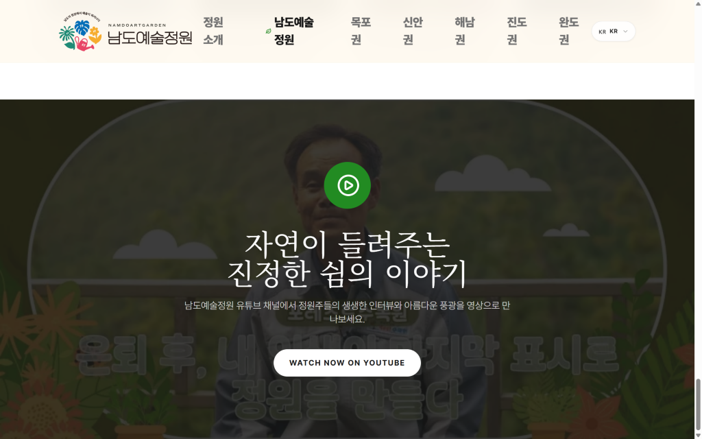
• 메뉴명이 목포 / 권, 남도예 / 술정원처럼 2줄로 잘림
• Windows 환경에서 국기 이모지 폴백으로 KR KR 중복 노출
• 초기 진입 시 전체 화면을 까맣게 가리는 모달 팝업으로 사용자 이탈 유발
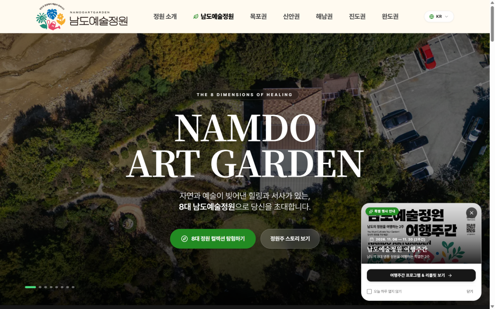
• whitespace-nowrap 적용으로 데스크톱 7개 메뉴 완벽한 1줄 정렬
• 🌐 KR 글로벌 아이콘 체계로 단정하고 전문적인 언어 선택기 구축
• createPortal 기반 우측 하단 플로팅 카드로 전환하여 콘텐츠 열람 방해 제로
남도 소식 & 공지 언론보도 탭 애니메이션 정상화 및 포스터 노출
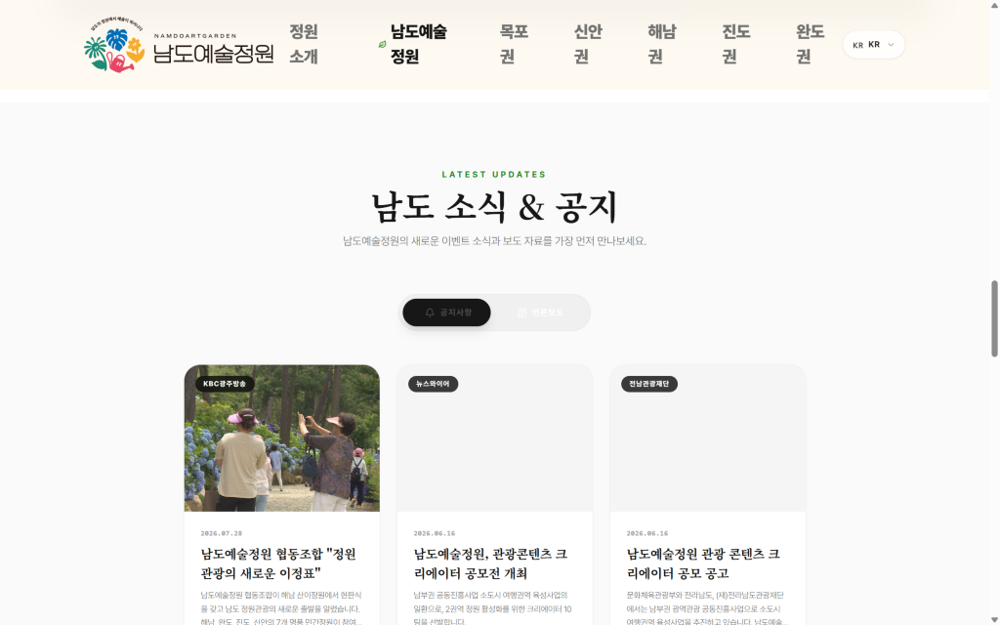
• "언론보도" 탭을 눌러도 활성 배경 알약이 "보도자료" 위치에 멈춰있는 라이브러리 충돌 버그
• 보도자료 썸네일이 로딩되지 않고 빈 회색 박스로 남아 미완성된 느낌 노출
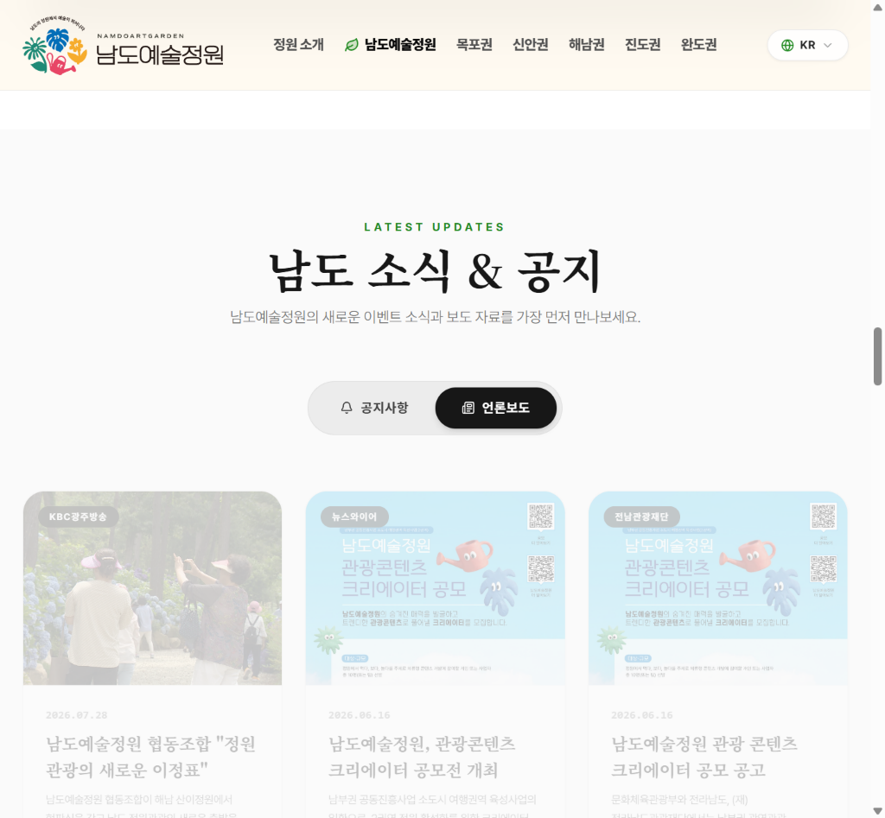
• Framer Motion layoutId 충돌 제거로 탭 클릭 시 매끄러운 슬라이딩 복원
• 3종 핵심 언론보도 포스터 이미지가 선명하게 노출되도록 에셋 경로 및 레이아웃 교정
한국관광공사 표준 타이포그래피 적용: 한글 쪼개짐 완전 해결
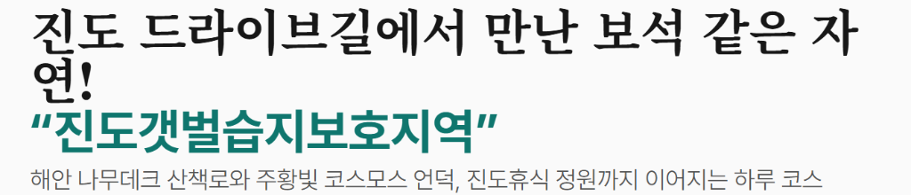
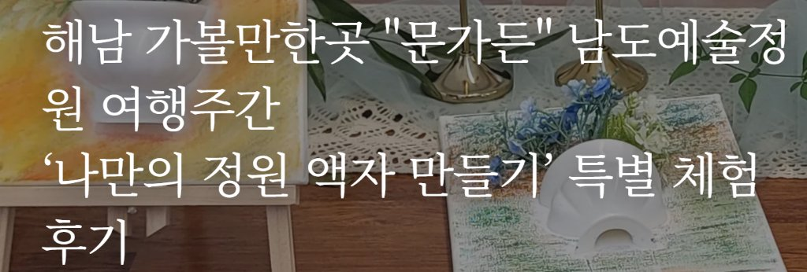
• 거대한 명조체 폰트와 고정 줄바꿈이 만나 한 단어의 마지막 글자가 외톨이로 떨어지는 현상 심화
• 배경 이미지 색상과 폰트 색상이 겹쳐 시각 피로도 급증
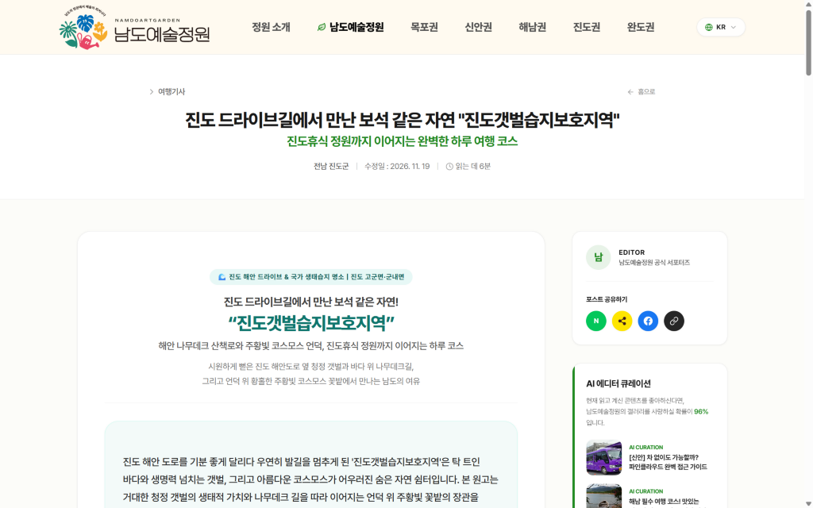
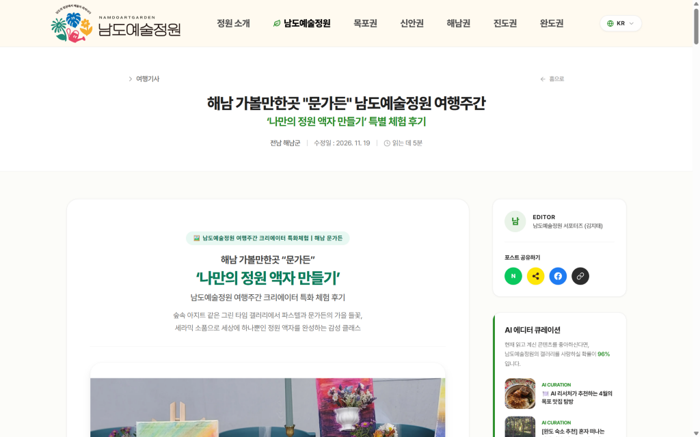
• 한국관광공사 포털과 동일한 순백 에디토리얼 헤더 도입
• 30~32px Pretendard ExtraBold(-0.04em) 메인 타이틀 + 20~22px 서브 타이틀 2단 분리
• word-break: keep-all 및 text-wrap: balance로 어떤 해상도에서도 단어 단위 안정 줄바꿈
중복 제목 97건 전수 제거, 본문 태그 3,528개 복원 및 카피 100% 통일
className="..."이 들어있어 브라우저가 스타일을 인식하지 못하고 표와 요약 박스가 깨짐 (81편 기사)
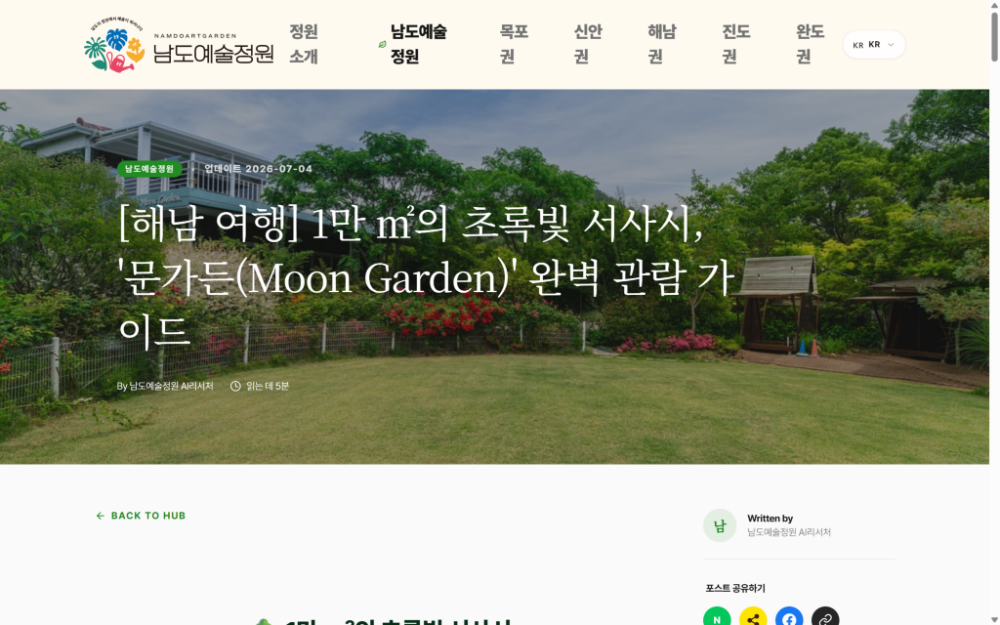
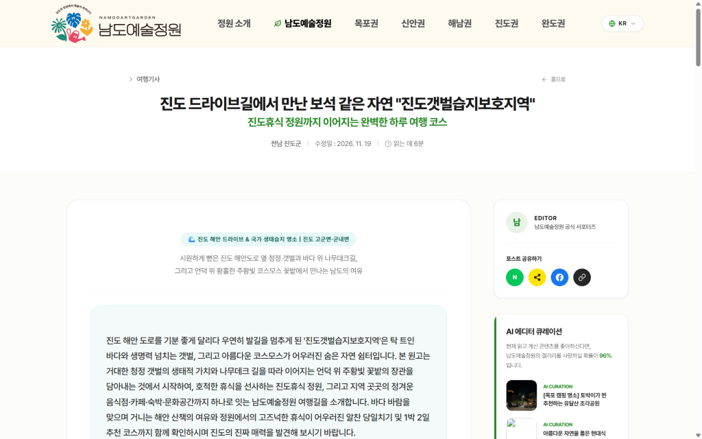
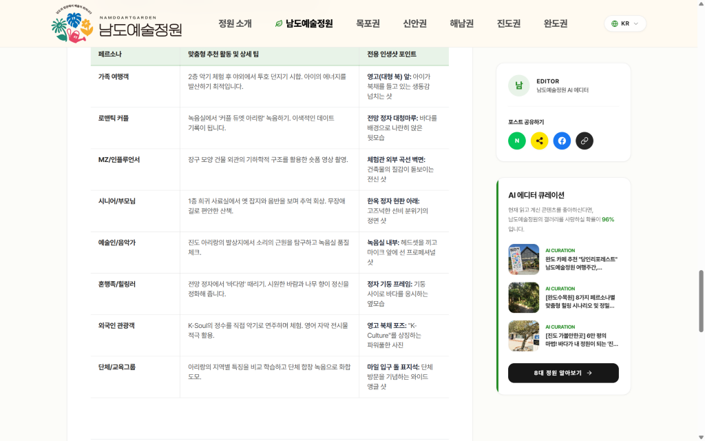
• 상단 헤더로 제목을 일원화하여 본문 첫머리 중복 H2/H1 97건을 말끔히 제거
• 3,528개 className=을 class=로 교정하여 8대 페르소나 비교표, 인용 박스 디자인 100% 부활
• 사이트 전체 문구를 "AI 에디터 큐레이션" 및 "8대 정원"으로 완전 일치화
본문 가독 폭 35% 확장, AI 3초 요약 카드 & 엄지 영역 하단 5탭 바 신설
• 3중 카드 테두리와 여백으로 390px 화면에서 본문 글자가 들어가는 폭이 250px에 불과 (한 줄 14자 수준으로 잦은 줄바꿈 발생)
• 데스크톱용 18px 폰트가 스마트폰에서 너무 크게 나와 몇 줄 안 읽어도 화면이 꽉 참
• 모바일 메인에서 8대 정원이 세로로 끝없이 나열되어 스크롤 피로도 가중
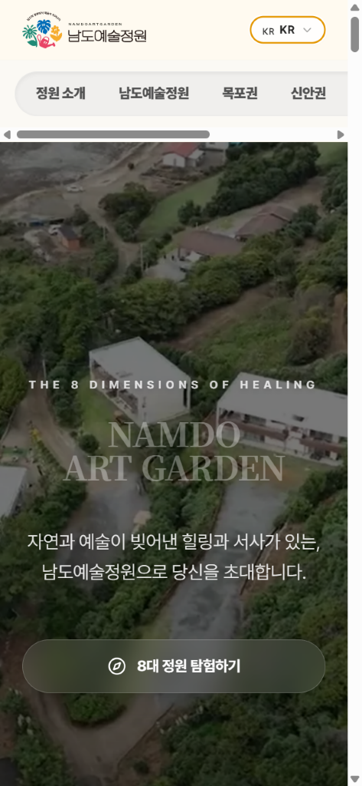
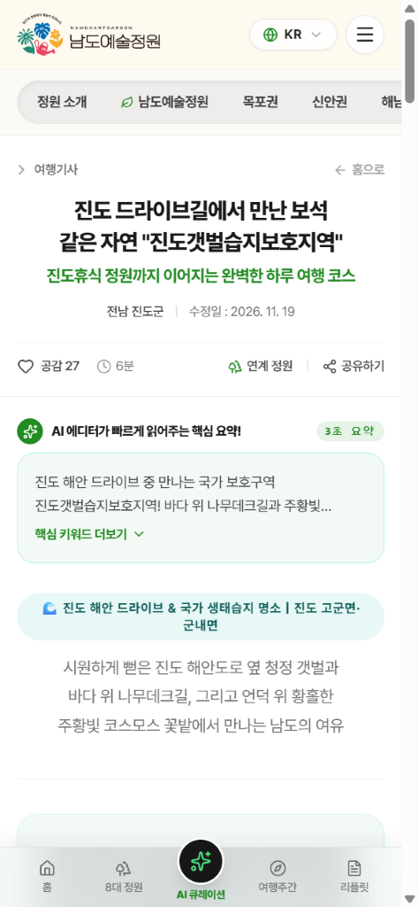
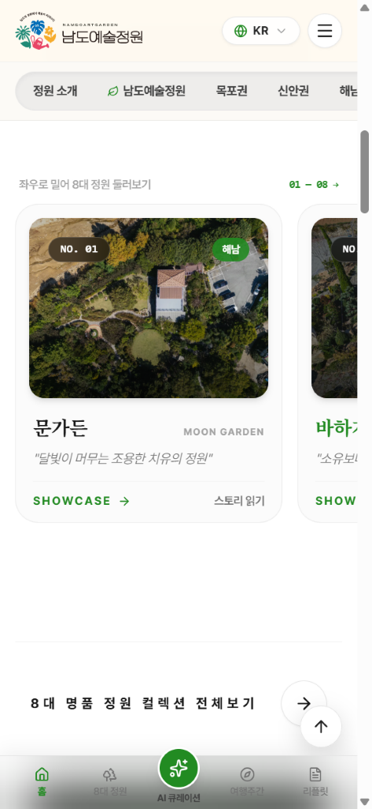
• 본문 가독 폭을 35% 넓혀 358px 풀폭 확보 (한 줄 22자 안정 수용)
• 스마트폰 최적 15.5px / 행간 1.75 타이포그래피 적용으로 읽기 피로도 급감
• "AI 에디터가 빠르게 읽어주는 핵심 요약!" (3초 요약 카드) 및 엄지 영역 하단 고정 5탭 바 + 맨 위로(↑) 플로팅 버튼 신설
• 모바일 메인 8대 정원 & 5대 권역을 가로 터치 스와이프 카루셀로 전환
초기 로딩 속도(LCP) 극대화: 로고 99.3% 감량 & 번들 75% 경량화
어도비 일러스트레이터 불필요 XML 메타데이터 2.57MB를 제거하여 화질 손실 없이 99.3% 용량 절감 완료
400KB 초과 사진 219장을 WebP 무손실 압축하여 총 87MB 절감, 정원 허브 진입 지연 해결
React.lazy 기반 페이지별 동적 라우트 분할로 초기 로딩 다운로드 용량을 75% 이상 경량화
실시간 운영 서버(Vercel Production) 배포 및 브라우저 검증 결과
도메인: https://namdoartgarden.com/ (GitHub main 브랜치 최신 커밋 자동 반영)
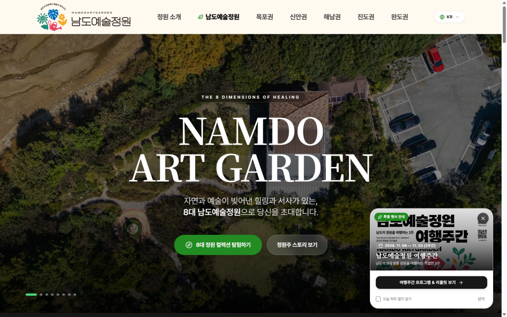
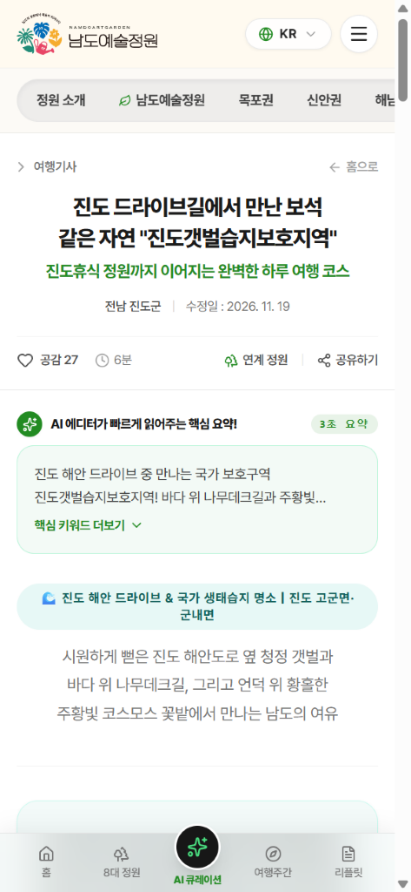
향후 사이트 운영 및 콘텐츠 등록 가이드라인 제언
향후 신규 취재 기사 등록 시 제목 앞에 [지역명/정원명] 말머리를 붙여주시면 시스템이 자동으로 상단 배지와 2단 타이틀로 자동 정렬합니다. 본문 첫머리에 중복 H2 제목이나 대표 사진을 넣지 않아도 상단에 최적 배치됩니다.
모든 큐레이션 및 추천 콘텐츠는 "AI 에디터 큐레이션"으로 표기하며, 정원 공식 수량은 "8대 정원"으로 일관되게 작성하여 방문자에게 명확한 브랜드 아이덴티티를 전달합니다.
신규 사진 등록 시 장당 1~2MB 이상의 원본 대신 WebP 포맷(장당 200~400KB 수준)으로 압축하여 등록하시면 방문자의 모바일 데이터 절약과 초고속 LCP를 영구적으로 유지할 수 있습니다.